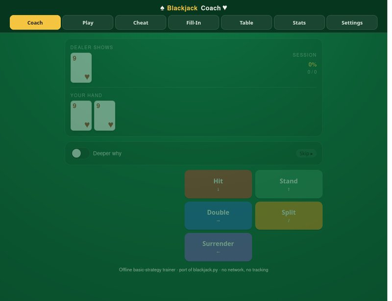

Blackjack Coach drills basic strategy. It deals you a hand, you pick the play, and it tells you whether you were right and why.

Coach mode. A pair of nines against a dealer 9 is the kind of hand people get wrong.
Seven tabs, and they are different jobs:
- Coach drills you hand by hand and keeps a running percentage for the session.
- Play is the money game, with a bankroll.
- Cheat and Table are the strategy matrix, to read rather than to be tested on.
- Fill-In hands you the matrix with the answers blanked and asks you to complete it.
- Stats and Settings are what they sound like.
The rules it assumes are the common ones: six decks, dealer stands on soft 17, double after split allowed. Surrender and insurance are both in, since they are the two most people guess at.
The part I actually built it for is the phone. The five action buttons are pinned in a dock at the bottom, big enough for a thumb, so Split never ends up below the fold. There is a left-handed setting that moves them. A "deeper why" toggle expands the explanation when you want the reasoning rather than the answer.
It ships with a self-test that checks the strategy table against itself, because a trainer that teaches the wrong play is worse than no trainer.
It is one HTML file, 115 KB, and it is a port of a blackjack.py I had written earlier. No network, no tracking, and it works with the plane's wifi off.